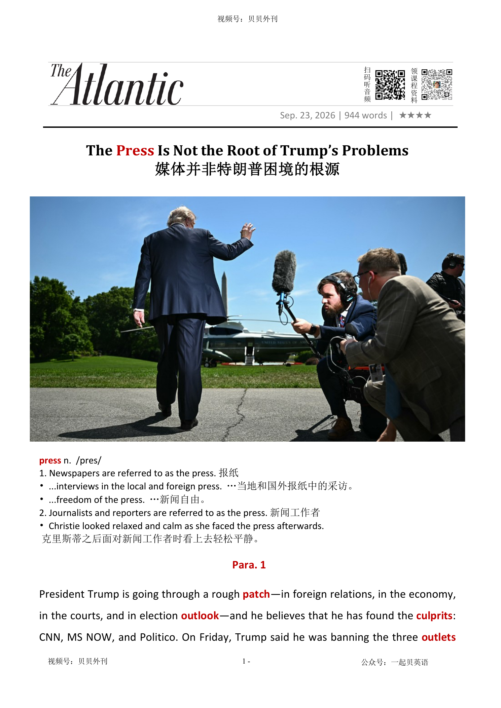

02 HEADLINE / 标题中英文解释
The Press Is Not the Root of Trump’s Problems
媒体并非特朗普困境的根源
press
报纸
1. Newspapers are referred to as the press.
The Press Is Not the Root of Trump’s Problems
媒体并非特朗普困境的根源
报纸
1. Newspapers are referred to as the press.文章围绕特朗普宣布禁止 CNN、MS NOW 和 Politico 进入白宫采访一事展开，分析这场媒体禁令背后的政治逻辑和反讽后果。
开头先交代事件背景：特朗普在外交、经济、司法和选举前景上都遭遇压力，于是把责任归咎于几家媒体，并以“报道不实和破坏性”为由封杀它们。
但被禁媒体以及白宫记者协会并未退缩，而是集体抵制相关采访池安排，并把白宫告上法庭，认为这侵犯了新闻自由。
文章中段指出，特朗普政府给出的辩解非常矛盾：一方面声称只是反击“假新闻”，另一方面又在发言中差点承认这是在“封禁自由媒体”。
作者认为，特朗普一直迷信媒体报道能塑造现实，认为如果报道更友好，选民就会用不同方式看待他的执政表现；然而如今传统媒体影响力已经下降，并不能像他想象的那样决定总统声望。
文章随后把这种误判放到更长的政治传统里看：奥巴马、拜登也曾高估叙事和新闻报道的力量，而特朗普只是以更激烈、更报复性的方式重复同样错误。
后半部分还批评自由派的另一种幻想：他们以为如果媒体标题更尖锐、报道更强硬，特朗普就不会当选或连任。
作者强调，现实并非媒体没有报道特朗普的问题，而是大量选民在充分知道这些争议后仍然选择了他。
结尾形成讽刺：特朗普既厌恶敌对报道，又极度渴望曝光；当他把媒体赶走后，自己的讲话也可能无人完整记录。
文章的核心判断是，把政治失败归咎于媒体是一种逃避，而审查媒体最终也会伤害依赖关注的政治人物本人。
The article is about President Trump’s decision to ban CNN, MS NOW and Politico from the White House. Trump is facing problems in foreign policy, the economy, the courts and future elections.
He says these media outlets have reported on him unfairly, so he wants to keep them out of the White House press pool. The media groups do not accept this.
They refuse to take part in the new press pool system, and they sue the White House. They say the ban is an attack on press freedom.
The White House says it is only fighting false reporting, but the article argues that the ban is really about punishing critical coverage. The writer then explains Trump’s belief about the media.
Trump thinks news coverage can change political reality. He believes that if newspapers and TV channels treated him better, voters might see him differently.
But the article says this belief is too simple. Traditional media are much weaker than before, and they cannot fully control what voters think.
The article also says that other presidents have made a similar mistake. Barack Obama and Joe Biden also cared a lot about public messaging and news narratives.
Trump is different because he uses harsher and more aggressive methods, but the basic mistake is the same: he gives the media too much power in his own mind. The writer also criticises some liberals.
They believe stronger headlines or tougher reporting could have stopped Trump. But Trump has already received huge amounts of negative coverage.
Many voters knew about his problems and still supported him. The main message is that blaming the media is a way to avoid harder political truths.
The ending is ironic: Trump hates hostile coverage, but he also needs attention. If he bans reporters, his own words may no longer be heard clearly.
媒体禁令风波爆发（Para1-2） ├─ 事件：特朗普封禁三家媒体，媒体集体抵制并提起诉讼 ├─ 本质：持续攻击言论自由，引发多方强烈反对 └─ 先例：此前封禁美联社，相关诉讼仍待审理 辩解与核心矛盾（Para3-4） ├─ 口误翻车：误称此举是“封禁自由媒体”，随后急忙改口 ├─ 底层逻辑：特朗普迷信媒体报道能左右现实 └─ 媒体现状：影响力减弱，却仍被当作成败的背锅方 历代总统的相同误区（Para5-6） ├─ 前车之鉴：奥巴马、拜登政府都高估舆论叙事的作用 ├─ 特朗普误判：把自身支持率下滑归咎媒体而非施政失误 └─ 事实：媒体无法同时既弱小无力又一手遮天 双向的认知错觉（Para7-9） ├─ 自由派误区：认为更强硬报道本可以阻止特朗普 ├─ 客观事实：特朗普已承受史上最多负面调查报道 └─ 共同逃避：双方都习惯把责任推给媒体，回避选民真实选择 禁令带来的讽刺性后果（Para10） ├─ 矛盾：特朗普既反感批评报道，又极度渴求曝光 ├─ 现场窘境：媒体集体缺席，他的发言无人收录 └─ 核心结论：审查手段，最终也会让审查者失声
President Trump is going through a rough patch补丁—in foreign relations, in the economy, in the courts, and in election outlook前景—and he believes that he has found the culprits犯错的人: CNN, MS NOW, and Politico. On Friday, Trump said he was banning the three outlets媒体机构 from the White House “as a result of their constant ‘reporting’ FAKE NEWS” and warned that more bans could come. When he feels beleaguered饱受批评的, he tends to lash out at familiar enemies, especially reporters. The idea that negative coverage is to blame for his predicament尴尬的处境 is perversely flattering奉承的. But Trump’s true scourge祸害 is reality, not how the news is covering it.
特朗普总统最近正经历一段艰难时期，外交受挫、经济承压、官司缠身、选举前景黯淡。而在他看来，罪魁祸首已经找到：CNN、MS NOW 和 Politico。上周五，特朗普宣布将这三家媒体逐出白宫，理由是它们长期散布“假新闻”，并警告说未来还会有更多媒体遭到封禁。每当感到四面受敌时，他总会把怒火发泄到那些熟悉的“敌人”身上，尤其是记者。把负面报道视为自身困境的根源，其实是一种自我陶醉式的解释。然而，真正让他身陷困境的，并不是新闻报道，而是现实本身。
Although the decision is part of a gradually intensifying attack on free speech, it has drawn particular pushback反对. This morning, five major TV networks (including Fox News) agreed to suspend暂停 pool coverage联合采访报道 of the president and White House events after CNN was blocked from its previously assigned spot in a pool共用的资源 rotation轮换 today. The three banned outlets also sued over their exclusion排斥. How such a suit will fare进展 is unclear; Trump banned the Associated Press报纸 from the White House press pool last year after it refused to adopt his renaming of the Gulf of Mexico, and a lawsuit challenging the ban is still pending待处理的.
尽管这一决定只是其逐步升级的言论自由打压行动中的一环，却引发了格外强烈的反弹。今天上午，美国五大电视新闻网（其中包括福克斯新闻）一致决定暂停对白宫和总统活动的联合采访报道，以抗议 CNN 被排除出原本轮到它负责的记者池采访安排。遭到封禁的三家媒体也就此提起诉讼。这些诉讼最终能否胜诉，目前尚难预料。去年，特朗普曾将美联社逐出白宫记者池，仅仅因为该机构拒绝采用他对墨西哥湾的新命名。而针对那项禁令提起的诉讼，至今仍在审理之中。
After Trump committed a Kinsley gaffe金斯利失言 on Friday by calling his move “the ban on the free press,” he tried to clean up his spin导向性陈述 this morning. “The White House is not instituting建立 an assault on the Free Press, something which I cherish珍爱. It is instituting an assault on the FAKE NEWS,” he wrote, claiming that it “is a threat to our National Security, and must be stopped, NOW!” This is nonsense. Trump has every right to hate the way he’s covered, but if the government has the power to decide what is fake and what is true, then the press is not free.
上周五，特朗普无意间吐露了心底话，将自己的做法称为“对自由新闻的禁令”。意识到失言后，他今天上午急忙补救。“白宫并没有对自由新闻发起攻击，这是我珍视的东西。”他写道，“白宫攻击的是假新闻。”他还声称，假新闻“威胁国家安全，必须立刻制止”。这番话毫无道理。特朗普当然有权厌恶媒体对自己的报道方式。但如果由政府来决定什么是真实、什么是虚假，那么新闻就不再是自由的新闻。
Trump’s post demonstrates his talismanic具有护身符般象征意义的 belief in the power of news coverage. The president himself has been obsessed with attention—how to get it and how to shape it—for his entire life, and he is a relic遗物 from an era when the media were so dominant, and had such control over the means方式 of reaching an audience, that they seemed to shape reality. They are much diminished减少 today, occupying a strange, unstable role: strong enough to be blamed for both Trump’s rise and his downfall衰落, yet weak enough that they can be threatened with relative impunity不受惩罚.
特朗普的这篇帖子再次展现出他对新闻报道力量近乎迷信般的信仰。纵观其一生，他始终痴迷于博取关注度，如何获得关注、如何塑造关注。从某种意义上说，特朗普是一个旧媒体时代的遗存。那个时代里，媒体拥有近乎垄断性的传播渠道，因此看起来仿佛能够塑造现实本身。而今天的媒体早已山河日下，它们处于一种矛盾而不稳定的境地：强大到足以被指责为特朗普崛起与衰落的幕后推手，可它们的力量又足够衰微，以至于任何人都可以无所顾忌地对其施加威胁。
Though Trump’s attacks on free speech are unlike any in living memory在世人的记忆中, his is not the first administration to believe that its problems are about messaging and coverage. In 2012, Barack Obama said that the biggest mistake of his first term “was thinking that this job was just about getting the policy right,” because “the nature of this office is also to tell a story to the American people.” A decade later, Joe Biden’s administration was convinced that negative coverage of inflation and Biden’s age were bigger problems than inflation or the president’s evident清楚的 frailty虚弱.
尽管特朗普对言论自由的攻击在当代美国几乎前所未见，但他并不是第一个把自身问题归咎于传播和报道的政府领导人。2012年，奥巴马曾表示，他第一任期最大的错误，是以为总统工作只需要把政策做好。他后来意识到，总统这个职位的本质之一，同样是向美国人民讲好一个故事。十年之后，拜登政府也曾坚信，媒体对通胀问题和总统年龄问题的负面报道，比通胀本身和总统明显衰弱的状态更加棘手。
Now Trump is making the same misjudgment错误认识. He is not unpopular because of Politico, an outlet that focuses largely on Washington machinations秘密策划, or because of MS NOW or CNN, two cable有线电视 channels that—as he is fond of pointing out—have relatively small audiences for television. The media cannot be “failing” and all-powerful有无上权力的 at the same time. Trump is unpopular because (to name a few big reasons) he is losing a war of choice首选的 to Iran, making inflation worse without seeming to care how voters feel, overreaching做得过头 with draconian严厉的 immigration enforcement执行, and focusing on vanity自负 projects that don’t matter to voters.
如今，特朗普正犯着同样的判断错误。他并非因为 Politico 而失去民意支持，这家媒体主要关注华盛顿的政治运作；他也并非因为 MS NOW 或 CNN 而变得不受欢迎，正如他自己经常强调的那样，这两家有线电视台的观众规模其实相当有限。媒体不可能同时既“濒临失败”，又“无所不能”。特朗普之所以失去支持，是因为——仅列举几个重要原因——他主动发动了一场的对伊战争并陷入泥潭；他让通胀进一步恶化，却似乎并不关心选民的感受；他在移民执法问题上滥权越界，采取近乎苛刻的措施；与此同时，他又把精力耗费在那些与普通选民无关的形象工程上。
Ironically, Trump is committing the same error as many liberal自由的 critics of the press, who seem to believe that popular民众的 support for the president would have collapsed倒塌 long ago if the media had used harsher words to describe him. But the idea that tougher coverage would have stopped him is fantasy. Although the press has made many mistakes in how it has reported on the president, including giving him hours of uninterrupted不受阻挡的 TV air time in 2016, downplaying对…轻描淡写 bigoted偏执的 remarks, and “sanewashing通过包装使……显得合理” some statements, Trump has also received more intensive investigation and negative coverage than any president in American history.
讽刺的是，特朗普如今犯下的错误，与许多自由派媒体批评者如出一辙。这些人似乎相信，如果媒体当初用更严厉的措辞描述特朗普，那么公众对他的支持早就崩塌了。但认为更强硬的报道能够阻止特朗普，本身就是一种幻想。媒体在报道特朗普时当然犯过不少错误。例如，2016年竞选期间给予他数小时不间断的电视曝光；淡化其带有偏见色彩的言论；又或者对某些明显失常的表态进行“洗白”。然而，与此同时，特朗普也遭受了美国历史上任何一位总统都未曾经历过的高强度调查和负面报道。
Some of that coverage has surely been hackish partisanship党派偏见—which is protected by the First Amendment美国宪法第一修正案 too—but much of it has been earned. Newspapers, magazines, wire services, and TV networks have turned out a series of scoops独家新闻 about the chaos inside the administration, Trump’s policy errors, and the pervasive遍布的 corruption around him. In late 2023, The Atlantic published a set of prescient有先见之明的 essays considering what would happen if Trump won back the White House. Voters had even lived through one Trump presidency already. They had access to the relevant information before they voted him in again.
其中部分报道或许确实带有狭隘的党派色彩——而这种表达同样受到《第一修正案》的保护。但更多报道，则完全是他咎由自取。报纸、杂志、通讯社以及电视网络陆续披露了一系列独家新闻，揭示了政府内部的混乱、政策上的失误，以及围绕特朗普的系统性腐败。2023年底，《大西洋月刊》还刊登了一系列极具前瞻性的文章，探讨如果特朗普重返白宫，美国将会面临什么局面。事实上，选民们早已亲身经历过特朗普的第一个总统任期。在再次将他送回白宫之前，他们已经接触到了足够多的相关信息。
Believing that Americans might have chosen differently if only The New York Times had abandoned its obtuse迟钝的 headline conventions is comforting to some Trump critics, because it puts the blame on the press rather than acknowledging that a majority of those who voted wanted Trump. By the same token由于同样的原因, Trump would rather blame news outlets he does not like than confront面临 the reality that some of those same voters are rejecting him because of his choices.
对一些特朗普批评者而言，相信“如果《纽约时报》放弃那些晦涩保守的标题写法，美国人就会做出不同选择”，无疑是一种心理慰藉。因为这样一来，责任便落到了媒体头上，而无需承认一个事实：大多数投票的选民恰恰想要的就是特朗普。同样地，对特朗普而言，把责任推给自己讨厌的媒体，也远比直面现实来得容易——即那些曾经支持过他的选民，如今正因为他的种种选择而正离他而去。
The president faces an additional risk in trying to ban these three outlets. He detests厌恶 adversarial对立的 coverage, but he desperately desires attention. This afternoon, Trump spoke with reporters outside the White House. Usually, his comments are captured拍摄 by the boom mics from the pool TV team, but without their presence today, he was inaudible听不见的. Censorship审查 can silence anyone, it turns out—even the censor.
而在封禁这三家媒体的问题上，特朗普还面临着额外风险。他痛恨敌对性的报道，却又极度渴望获得关注。今天下午，特朗普在白宫外接受记者提问。按照惯例，他的讲话会被联合记者团的长杆麦克风清晰收录。然而，由于这些媒体今天集体缺席，他的声音根本无法被听清。事实证明，审查制度能够让任何人失声——甚至包括实施审查的人自己。
报纸
1. Newspapers are referred to as the press.
...interviews in the local and foreign press. …当地和国外报纸中的采访。
How such a suit will fare is unclear; Trump banned the Associated Press from the White House press pool last year after it refused to adopt his renaming of the Gulf of Mexico, and a lawsuit challenging the ban is still pending.
尽管这一决定只是其逐步升级的言论自由打压行动中的一环，却引发了格外强烈的反弹。今天上午，美国五大电视新闻网（其中包括福克斯新闻）一致决定暂停对白宫和总统活动的联合采访报道，以抗议 CNN 被排除出原本轮到它负责的记者池采访安排。遭到封禁的三家媒体也就此提起诉讼。这些诉讼最终能否胜诉，目前尚难预料。去年，特朗普曾将美联社逐出白宫记者池，仅仅因为该机构拒绝采用他对墨西哥湾的新命名。而针对那项禁令提起的诉讼，至今仍在审理之中。
补丁；补块
1. a small piece of material that is used to cover a hole in sth or to make a weak area stronger, or as decoration
I sewed patches on the knees of my jeans.我在我的牛仔裤膝部打了个补丁。 2. a period of time of the type mentioned, usually a difficult or unhappy one 一段（艰难）岁月；一段（痛苦）日子
President Trump is going through a rough patch—in foreign relations, in the economy, in the courts, and in election outlook—and he believes that he has found the culprits: CNN, MS NOW, and Politico.
特朗普总统最近正经历一段艰难时期，外交受挫、经济承压、官司缠身、选举前景黯淡。而在他看来，罪魁祸首已经找到：CNN、MS NOW 和 Politico。上周五，特朗普宣布将这三家媒体逐出白宫，理由是它们长期散布“假新闻”，并警告说未来还会有更多媒体遭到封禁。每当感到四面受敌时，他总会把怒火发泄到那些熟悉的“敌人”身上，尤其是记者。把负面报道视为自身困境的根源，其实是一种自我陶醉式的解释。然而，真正让他身陷困境的，并不是新闻报道，而是现实…
前景；可能性
the probable future for sb/sth; what is likely to happen
The outlook for jobs is bleak.就业市场前景暗淡。
President Trump is going through a rough patch—in foreign relations, in the economy, in the courts, and in election outlook—and he believes that he has found the culprits: CNN, MS NOW, and Politico.
特朗普总统最近正经历一段艰难时期，外交受挫、经济承压、官司缠身、选举前景黯淡。而在他看来，罪魁祸首已经找到：CNN、MS NOW 和 Politico。上周五，特朗普宣布将这三家媒体逐出白宫，理由是它们长期散布“假新闻”，并警告说未来还会有更多媒体遭到封禁。每当感到四面受敌时，他总会把怒火发泄到那些熟悉的“敌人”身上，尤其是记者。把负面报道视为自身困境的根源，其实是一种自我陶醉式的解释。然而，真正让他身陷困境的，并不是新闻报道，而是现实…
犯错的人；罪犯
1. a person who has done sth wrong or against the law
The police quickly identified the real culprits.警方很快查出了真正的罪犯。 2. a person or thing responsible for causing a problem肇事者；引起问题的事物
President Trump is going through a rough patch—in foreign relations, in the economy, in the courts, and in election outlook—and he believes that he has found the culprits: CNN, MS NOW, and Politico.
特朗普总统最近正经历一段艰难时期，外交受挫、经济承压、官司缠身、选举前景黯淡。而在他看来，罪魁祸首已经找到：CNN、MS NOW 和 Politico。上周五，特朗普宣布将这三家媒体逐出白宫，理由是它们长期散布“假新闻”，并警告说未来还会有更多媒体遭到封禁。每当感到四面受敌时，他总会把怒火发泄到那些熟悉的“敌人”身上，尤其是记者。把负面报道视为自身困境的根源，其实是一种自我陶醉式的解释。然而，真正让他身陷困境的，并不是新闻报道，而是现实…
媒体机构；渠道
a media organization through which something is distributed
The story was widely reported by major news outlets around the world. 这则新闻被世界各大新闻媒体广泛报道。
On Friday, Trump said he was banning the three outlets from the White House “as a result of their constant ‘reporting’ FAKE NEWS” and warned that more bans could come.
特朗普总统最近正经历一段艰难时期，外交受挫、经济承压、官司缠身、选举前景黯淡。而在他看来，罪魁祸首已经找到：CNN、MS NOW 和 Politico。上周五，特朗普宣布将这三家媒体逐出白宫，理由是它们长期散布“假新闻”，并警告说未来还会有更多媒体遭到封禁。每当感到四面受敌时，他总会把怒火发泄到那些熟悉的“敌人”身上，尤其是记者。把负面报道视为自身困境的根源，其实是一种自我陶醉式的解释。然而，真正让他身陷困境的，并不是新闻报道，而是现实…
饱受批评的；处于困境的
1. experiencing a lot of criticism and difficulties
The beleaguered party leader was forced to resign.那位饱受指责的政党领导人被迫辞职。
When he feels beleaguered, he tends to lash out at familiar enemies, especially reporters.
特朗普总统最近正经历一段艰难时期，外交受挫、经济承压、官司缠身、选举前景黯淡。而在他看来，罪魁祸首已经找到：CNN、MS NOW 和 Politico。上周五，特朗普宣布将这三家媒体逐出白宫，理由是它们长期散布“假新闻”，并警告说未来还会有更多媒体遭到封禁。每当感到四面受敌时，他总会把怒火发泄到那些熟悉的“敌人”身上，尤其是记者。把负面报道视为自身困境的根源，其实是一种自我陶醉式的解释。然而，真正让他身陷困境的，并不是新闻报道，而是现实…
尴尬的处境；困境；窘境
a difficult or unpleasant situation, especially one where it is difficult to know what to do
the club's financial predicament俱乐部的财政困境
The idea that negative coverage is to blame for his predicament is perversely flattering.
特朗普总统最近正经历一段艰难时期，外交受挫、经济承压、官司缠身、选举前景黯淡。而在他看来，罪魁祸首已经找到：CNN、MS NOW 和 Politico。上周五，特朗普宣布将这三家媒体逐出白宫，理由是它们长期散布“假新闻”，并警告说未来还会有更多媒体遭到封禁。每当感到四面受敌时，他总会把怒火发泄到那些熟悉的“敌人”身上，尤其是记者。把负面报道视为自身困境的根源，其实是一种自我陶醉式的解释。然而，真正让他身陷困境的，并不是新闻报道，而是现实…
反常的；有悖常理的；故意唱反调的
showing a deliberate desire to behave in an unreasonable, unacceptable, or contrary way; producing results opposite to what is intended
The policy created a perverse incentive for companies to delay investment. 这项政策产生了一种反常的激励机制，使企业推迟投资。
奉承的；阿谀的；讨好的
1. saying nice things about sb/sth
flattering remarks奉承话 2. making sb feel pleased and special奉承的；使人感到荣幸的
The idea that negative coverage is to blame for his predicament is perversely flattering.
特朗普总统最近正经历一段艰难时期，外交受挫、经济承压、官司缠身、选举前景黯淡。而在他看来，罪魁祸首已经找到：CNN、MS NOW 和 Politico。上周五，特朗普宣布将这三家媒体逐出白宫，理由是它们长期散布“假新闻”，并警告说未来还会有更多媒体遭到封禁。每当感到四面受敌时，他总会把怒火发泄到那些熟悉的“敌人”身上，尤其是记者。把负面报道视为自身困境的根源，其实是一种自我陶醉式的解释。然而，真正让他身陷困境的，并不是新闻报道，而是现实…
祸害；祸根；灾害
1. a person or thing that causes trouble or suffering
the scourge of war/disease/poverty 战争╱疾病╱贫穷之苦
But Trump’s true scourge is reality, not how the news is covering it.
特朗普总统最近正经历一段艰难时期，外交受挫、经济承压、官司缠身、选举前景黯淡。而在他看来，罪魁祸首已经找到：CNN、MS NOW 和 Politico。上周五，特朗普宣布将这三家媒体逐出白宫，理由是它们长期散布“假新闻”，并警告说未来还会有更多媒体遭到封禁。每当感到四面受敌时，他总会把怒火发泄到那些熟悉的“敌人”身上，尤其是记者。把负面报道视为自身困境的根源，其实是一种自我陶醉式的解释。然而，真正让他身陷困境的，并不是新闻报道，而是现实…
加强，增强，加剧
to increase in degree or strength; to make sth increase in degree or strength
Violence intensified during the night.在夜间暴力活动加剧了。
反对；抵制；阻力
resistance, opposition, or negative reaction to an idea, policy, or change
The proposal faced strong pushback from business leaders. 这项提议遭到了商界领袖的强烈反对。
Although the decision is part of a gradually intensifying attack on free speech, it has drawn particular pushback.
尽管这一决定只是其逐步升级的言论自由打压行动中的一环，却引发了格外强烈的反弹。今天上午，美国五大电视新闻网（其中包括福克斯新闻）一致决定暂停对白宫和总统活动的联合采访报道，以抗议 CNN 被排除出原本轮到它负责的记者池采访安排。遭到封禁的三家媒体也就此提起诉讼。这些诉讼最终能否胜诉，目前尚难预料。去年，特朗普曾将美联社逐出白宫记者池，仅仅因为该机构拒绝采用他对墨西哥湾的新命名。而针对那项禁令提起的诉讼，至今仍在审理之中。
暂停；中止；使暂停发挥作用（或使用等）
to officially stop sth for a time; to prevent sth from being active, used, etc. for a time
Production has been suspended while safety checks are carried out.在进行安全检查期间生产暂停。
This morning, five major TV networks (including Fox News) agreed to suspend pool coverage of the president and White House events after CNN was blocked from its previously assigned spot in a pool rotation today.
尽管这一决定只是其逐步升级的言论自由打压行动中的一环，却引发了格外强烈的反弹。今天上午，美国五大电视新闻网（其中包括福克斯新闻）一致决定暂停对白宫和总统活动的联合采访报道，以抗议 CNN 被排除出原本轮到它负责的记者池采访安排。遭到封禁的三家媒体也就此提起诉讼。这些诉讼最终能否胜诉，目前尚难预料。去年，特朗普曾将美联社逐出白宫记者池，仅仅因为该机构拒绝采用他对墨西哥湾的新命名。而针对那项禁令提起的诉讼，至今仍在审理之中。
联合采访报道；记者团轮值报道（由少数媒体代表所有媒体采访并共享信息）
a system in journalism in which a small group of reporters or media organizations covers an event on behalf of all news organizations and then shares the information
Because space was limited, the White House allowed only pool coverage of the meeting. 由于场地有限，白宫只允许记者团进行联合采访报道。
This morning, five major TV networks (including Fox News) agreed to suspend pool coverage of the president and White House events after CNN was blocked from its previously assigned spot in a pool rotation today.
尽管这一决定只是其逐步升级的言论自由打压行动中的一环，却引发了格外强烈的反弹。今天上午，美国五大电视新闻网（其中包括福克斯新闻）一致决定暂停对白宫和总统活动的联合采访报道，以抗议 CNN 被排除出原本轮到它负责的记者池采访安排。遭到封禁的三家媒体也就此提起诉讼。这些诉讼最终能否胜诉，目前尚难预料。去年，特朗普曾将美联社逐出白宫记者池，仅仅因为该机构拒绝采用他对墨西哥湾的新命名。而针对那项禁令提起的诉讼，至今仍在审理之中。
共用的资源（或资金）
a supply of things or money that is shared by a group of people and can be used when needed
a pool car一辆共用的汽车
This morning, five major TV networks (including Fox News) agreed to suspend pool coverage of the president and White House events after CNN was blocked from its previously assigned spot in a pool rotation today.
尽管这一决定只是其逐步升级的言论自由打压行动中的一环，却引发了格外强烈的反弹。今天上午，美国五大电视新闻网（其中包括福克斯新闻）一致决定暂停对白宫和总统活动的联合采访报道，以抗议 CNN 被排除出原本轮到它负责的记者池采访安排。遭到封禁的三家媒体也就此提起诉讼。这些诉讼最终能否胜诉，目前尚难预料。去年，特朗普曾将美联社逐出白宫记者池，仅仅因为该机构拒绝采用他对墨西哥湾的新命名。而针对那项禁令提起的诉讼，至今仍在审理之中。
轮换；交替；换班
the act of regularly changing the thing that is being used in a particular situation, or of changing the person who does a particular job
crop rotation/the rotation of crops (= changing the crop that is grown on an area of land in order to protect the soil) 庄稼的轮作
This morning, five major TV networks (including Fox News) agreed to suspend pool coverage of the president and White House events after CNN was blocked from its previously assigned spot in a pool rotation today.
尽管这一决定只是其逐步升级的言论自由打压行动中的一环，却引发了格外强烈的反弹。今天上午，美国五大电视新闻网（其中包括福克斯新闻）一致决定暂停对白宫和总统活动的联合采访报道，以抗议 CNN 被排除出原本轮到它负责的记者池采访安排。遭到封禁的三家媒体也就此提起诉讼。这些诉讼最终能否胜诉，目前尚难预料。去年，特朗普曾将美联社逐出白宫记者池，仅仅因为该机构拒绝采用他对墨西哥湾的新命名。而针对那项禁令提起的诉讼，至今仍在审理之中。
排斥；排除在外
the act of preventing sb/sth from entering a place or taking part in sth
He was disappointed with his exclusion from the England squad.
The three banned outlets also sued over their exclusion.
尽管这一决定只是其逐步升级的言论自由打压行动中的一环，却引发了格外强烈的反弹。今天上午，美国五大电视新闻网（其中包括福克斯新闻）一致决定暂停对白宫和总统活动的联合采访报道，以抗议 CNN 被排除出原本轮到它负责的记者池采访安排。遭到封禁的三家媒体也就此提起诉讼。这些诉讼最终能否胜诉，目前尚难预料。去年，特朗普曾将美联社逐出白宫记者池，仅仅因为该机构拒绝采用他对墨西哥湾的新命名。而针对那项禁令提起的诉讼，至今仍在审理之中。
（在某种情况下）进展，表现，成功
to perform, progress, or succeed in a particular situation
Small businesses have fared better than expected despite higher interest rates. 尽管利率上升，小企业的表现还是好于预期。
How such a suit will fare is unclear; Trump banned the Associated Press from the White House press pool last year after it refused to adopt his renaming of the Gulf of Mexico, and a lawsuit challenging the ban is still pending.
尽管这一决定只是其逐步升级的言论自由打压行动中的一环，却引发了格外强烈的反弹。今天上午，美国五大电视新闻网（其中包括福克斯新闻）一致决定暂停对白宫和总统活动的联合采访报道，以抗议 CNN 被排除出原本轮到它负责的记者池采访安排。遭到封禁的三家媒体也就此提起诉讼。这些诉讼最终能否胜诉，目前尚难预料。去年，特朗普曾将美联社逐出白宫记者池，仅仅因为该机构拒绝采用他对墨西哥湾的新命名。而针对那项禁令提起的诉讼，至今仍在审理之中。
待处理的
1. if something such as a legal procedure is pending, it is waiting to be dealt with or settled.
She had a libel action against the magazine pending. 她有一项针对那家杂志的诽谤诉讼待处理。
How such a suit will fare is unclear; Trump banned the Associated Press from the White House press pool last year after it refused to adopt his renaming of the Gulf of Mexico, and a lawsuit challenging the ban is still pending.
尽管这一决定只是其逐步升级的言论自由打压行动中的一环，却引发了格外强烈的反弹。今天上午，美国五大电视新闻网（其中包括福克斯新闻）一致决定暂停对白宫和总统活动的联合采访报道，以抗议 CNN 被排除出原本轮到它负责的记者池采访安排。遭到封禁的三家媒体也就此提起诉讼。这些诉讼最终能否胜诉，目前尚难预料。去年，特朗普曾将美联社逐出白宫记者池，仅仅因为该机构拒绝采用他对墨西哥湾的新命名。而针对那项禁令提起的诉讼，至今仍在审理之中。
(愚蠢或粗心的)错误
A gaffe is a stupid or careless mistake, for example when you say or do something that offends or upsets people.
He made an embarrassing gaffe at the convention last weekend. 在上周的会议上，他犯了一个尴尬的错误。
After Trump committed a Kinsley gaffe on Friday by calling his move “the ban on the free press,” he tried to clean up his spin this morning.
上周五，特朗普无意间吐露了心底话，将自己的做法称为“对自由新闻的禁令”。意识到失言后，他今天上午急忙补救。“白宫并没有对自由新闻发起攻击，这是我珍视的东西。”他写道，“白宫攻击的是假新闻。”他还声称，假新闻“威胁国家安全，必须立刻制止”。这番话毫无道理。特朗普当然有权厌恶媒体对自己的报道方式。但如果由政府来决定什么是真实、什么是虚假，那么新闻就不再是自由的新闻。
金斯利失言；无意中说出真实想法的政治失言
a revealing mistake in which a politician accidentally says what they actually believe, rather than what they intended to say
The candidate's remark was widely described as a Kinsley gaffe because it appeared to reveal what he really thought. 这名候选人的言论被广泛称为“金斯利失言”，因为它似乎无意中暴露了他的真实想法。
After Trump committed a Kinsley gaffe on Friday by calling his move “the ban on the free press,” he tried to clean up his spin this morning.
上周五，特朗普无意间吐露了心底话，将自己的做法称为“对自由新闻的禁令”。意识到失言后，他今天上午急忙补救。“白宫并没有对自由新闻发起攻击，这是我珍视的东西。”他写道，“白宫攻击的是假新闻。”他还声称，假新闻“威胁国家安全，必须立刻制止”。这番话毫无道理。特朗普当然有权厌恶媒体对自己的报道方式。但如果由政府来决定什么是真实、什么是虚假，那么新闻就不再是自由的新闻。
（尤指有利于自己的）导向性陈述
a way of presenting information or a situation in a particular way, especially one that makes you or your ideas seem good
Politicians put their own spin on the economic situation.政治家们对经济形势各执一词。
After Trump committed a Kinsley gaffe on Friday by calling his move “the ban on the free press,” he tried to clean up his spin this morning.
上周五，特朗普无意间吐露了心底话，将自己的做法称为“对自由新闻的禁令”。意识到失言后，他今天上午急忙补救。“白宫并没有对自由新闻发起攻击，这是我珍视的东西。”他写道，“白宫攻击的是假新闻。”他还声称，假新闻“威胁国家安全，必须立刻制止”。这番话毫无道理。特朗普当然有权厌恶媒体对自己的报道方式。但如果由政府来决定什么是真实、什么是虚假，那么新闻就不再是自由的新闻。
修饰说辞；美化宣传口径；调整公关表述
to improve, soften, or make a public explanation, message, or political narrative sound more convincing or acceptable
After facing criticism, the administration tried to clean up its spin on the policy change. 在遭到批评后，政府试图修饰其关于政策变化的说辞。
建立，制定（体系、政策等）；开始；实行
to introduce a system, policy, etc. or start a process
to institute criminal proceedings against sb对某人提起刑事诉讼
“The White House is not instituting an assault on the Free Press, something which I cherish.
上周五，特朗普无意间吐露了心底话，将自己的做法称为“对自由新闻的禁令”。意识到失言后，他今天上午急忙补救。“白宫并没有对自由新闻发起攻击，这是我珍视的东西。”他写道，“白宫攻击的是假新闻。”他还声称，假新闻“威胁国家安全，必须立刻制止”。这番话毫无道理。特朗普当然有权厌恶媒体对自己的报道方式。但如果由政府来决定什么是真实、什么是虚假，那么新闻就不再是自由的新闻。
珍爱；钟爱；爱护
to love sb/sth very much and want to protect them or it
Children need to be cherished.儿童需要无微不至的爱护。
“The White House is not instituting an assault on the Free Press, something which I cherish.
上周五，特朗普无意间吐露了心底话，将自己的做法称为“对自由新闻的禁令”。意识到失言后，他今天上午急忙补救。“白宫并没有对自由新闻发起攻击，这是我珍视的东西。”他写道，“白宫攻击的是假新闻。”他还声称，假新闻“威胁国家安全，必须立刻制止”。这番话毫无道理。特朗普当然有权厌恶媒体对自己的报道方式。但如果由政府来决定什么是真实、什么是虚假，那么新闻就不再是自由的新闻。
具有护身符般象征意义的；被视为能带来好运或力量的；极具号召力的
having special symbolic power, influence, or significance; believed to bring success, confidence, or protection
The trophy has become a talismanic symbol of the team's past success. 这座奖杯已经成为球队昔日辉煌成就的象征。
Trump’s post demonstrates his talismanic belief in the power of news coverage.
特朗普的这篇帖子再次展现出他对新闻报道力量近乎迷信般的信仰。纵观其一生，他始终痴迷于博取关注度，如何获得关注、如何塑造关注。从某种意义上说，特朗普是一个旧媒体时代的遗存。那个时代里，媒体拥有近乎垄断性的传播渠道，因此看起来仿佛能够塑造现实本身。而今天的媒体早已山河日下，它们处于一种矛盾而不稳定的境地：强大到足以被指责为特朗普崛起与衰落的幕后推手，可它们的力量又足够衰微，以至于任何人都可以无所顾忌地对其施加威胁。
遗物；遗迹；遗存；历史遗留物
an object, custom, or idea that has survived from an earlier time, especially one of historical significance
The building is one of the few relics of the colonial era. 这栋建筑是殖民时代少数留存下来的遗迹之一。
The president himself has been obsessed with attention—how to get it and how to shape it—for his entire life, and he is a relic from an era when the media were so dominant, and had such control over the means of reaching an audience, that they seemed to shape…
特朗普的这篇帖子再次展现出他对新闻报道力量近乎迷信般的信仰。纵观其一生，他始终痴迷于博取关注度，如何获得关注、如何塑造关注。从某种意义上说，特朗普是一个旧媒体时代的遗存。那个时代里，媒体拥有近乎垄断性的传播渠道，因此看起来仿佛能够塑造现实本身。而今天的媒体早已山河日下，它们处于一种矛盾而不稳定的境地：强大到足以被指责为特朗普崛起与衰落的幕后推手，可它们的力量又足够衰微，以至于任何人都可以无所顾忌地对其施加威胁。
方式；方法；途径
an action, an object or a system by which a result is achieved; a way of achieving or doing sth
Television is an effective means of communication.电视是一种有效的通信手段。
The president himself has been obsessed with attention—how to get it and how to shape it—for his entire life, and he is a relic from an era when the media were so dominant, and had such control over the means of reaching an audience, that they seemed to shape…
特朗普的这篇帖子再次展现出他对新闻报道力量近乎迷信般的信仰。纵观其一生，他始终痴迷于博取关注度，如何获得关注、如何塑造关注。从某种意义上说，特朗普是一个旧媒体时代的遗存。那个时代里，媒体拥有近乎垄断性的传播渠道，因此看起来仿佛能够塑造现实本身。而今天的媒体早已山河日下，它们处于一种矛盾而不稳定的境地：强大到足以被指责为特朗普崛起与衰落的幕后推手，可它们的力量又足够衰微，以至于任何人都可以无所顾忌地对其施加威胁。
减少；（使）减弱，缩减；降低
to become or to make sth become smaller, weaker, etc.
The world's resources are rapidly diminishing.世界资源正在迅速减少。
They are much diminished today, occupying a strange, unstable role: strong enough to be blamed for both Trump’s rise and his downfall, yet weak enough that they can be threatened with relative impunity.
特朗普的这篇帖子再次展现出他对新闻报道力量近乎迷信般的信仰。纵观其一生，他始终痴迷于博取关注度，如何获得关注、如何塑造关注。从某种意义上说，特朗普是一个旧媒体时代的遗存。那个时代里，媒体拥有近乎垄断性的传播渠道，因此看起来仿佛能够塑造现实本身。而今天的媒体早已山河日下，它们处于一种矛盾而不稳定的境地：强大到足以被指责为特朗普崛起与衰落的幕后推手，可它们的力量又足够衰微，以至于任何人都可以无所顾忌地对其施加威胁。
衰落；衰败；垮台；衰落（或衰败、垮台）的原因
the loss of a person's money, power, social position, etc.; the thing that causes this
The scandal finally led to his downfall.这桩丑闻最终使他身败名裂。
They are much diminished today, occupying a strange, unstable role: strong enough to be blamed for both Trump’s rise and his downfall, yet weak enough that they can be threatened with relative impunity.
特朗普的这篇帖子再次展现出他对新闻报道力量近乎迷信般的信仰。纵观其一生，他始终痴迷于博取关注度，如何获得关注、如何塑造关注。从某种意义上说，特朗普是一个旧媒体时代的遗存。那个时代里，媒体拥有近乎垄断性的传播渠道，因此看起来仿佛能够塑造现实本身。而今天的媒体早已山河日下，它们处于一种矛盾而不稳定的境地：强大到足以被指责为特朗普崛起与衰落的幕后推手，可它们的力量又足够衰微，以至于任何人都可以无所顾忌地对其施加威胁。
不受惩罚；逍遥法外；有恃无恐
freedom from punishment, consequences, or harmful effects for doing something wrong
Corrupt officials acted with impunity for many years. 腐败官员多年来一直逍遥法外。
They are much diminished today, occupying a strange, unstable role: strong enough to be blamed for both Trump’s rise and his downfall, yet weak enough that they can be threatened with relative impunity.
特朗普的这篇帖子再次展现出他对新闻报道力量近乎迷信般的信仰。纵观其一生，他始终痴迷于博取关注度，如何获得关注、如何塑造关注。从某种意义上说，特朗普是一个旧媒体时代的遗存。那个时代里，媒体拥有近乎垄断性的传播渠道，因此看起来仿佛能够塑造现实本身。而今天的媒体早已山河日下，它们处于一种矛盾而不稳定的境地：强大到足以被指责为特朗普崛起与衰落的幕后推手，可它们的力量又足够衰微，以至于任何人都可以无所顾忌地对其施加威胁。
在世人的记忆中；在人们有生之年的记忆中
within the period of time that people who are still alive can remember
The country is experiencing its worst economic crisis in living memory.
Though Trump’s attacks on free speech are unlike any in living memory, his is not the first administration to believe that its problems are about messaging and coverage.
尽管特朗普对言论自由的攻击在当代美国几乎前所未见，但他并不是第一个把自身问题归咎于传播和报道的政府领导人。2012年，奥巴马曾表示，他第一任期最大的错误，是以为总统工作只需要把政策做好。他后来意识到，总统这个职位的本质之一，同样是向美国人民讲好一个故事。十年之后，拜登政府也曾坚信，媒体对通胀问题和总统年龄问题的负面报道，比通胀本身和总统明显衰弱的状态更加棘手。
清楚的；显而易见的；显然的
clear; easily seen
It has now become evident to us that a mistake has been made.我们已经清楚出了差错。
A decade later, Joe Biden’s administration was convinced that negative coverage of inflation and Biden’s age were bigger problems than inflation or the president’s evident frailty.
尽管特朗普对言论自由的攻击在当代美国几乎前所未见，但他并不是第一个把自身问题归咎于传播和报道的政府领导人。2012年，奥巴马曾表示，他第一任期最大的错误，是以为总统工作只需要把政策做好。他后来意识到，总统这个职位的本质之一，同样是向美国人民讲好一个故事。十年之后，拜登政府也曾坚信，媒体对通胀问题和总统年龄问题的负面报道，比通胀本身和总统明显衰弱的状态更加棘手。
虚弱；衰弱
1. weakness and poor health
Increasing frailty meant that she was more and more confined to bed.
A decade later, Joe Biden’s administration was convinced that negative coverage of inflation and Biden’s age were bigger problems than inflation or the president’s evident frailty.
尽管特朗普对言论自由的攻击在当代美国几乎前所未见，但他并不是第一个把自身问题归咎于传播和报道的政府领导人。2012年，奥巴马曾表示，他第一任期最大的错误，是以为总统工作只需要把政策做好。他后来意识到，总统这个职位的本质之一，同样是向美国人民讲好一个故事。十年之后，拜登政府也曾坚信，媒体对通胀问题和总统年龄问题的负面报道，比通胀本身和总统明显衰弱的状态更加棘手。
错误认识; 错误判断
A misjudgment is an incorrect idea or opinion that is formed about someone or something, especially when a wrong decision is made as a result of this.
...a misjudgment in foreign policy which had far-reaching consequences. ...一个给外交政策带来深远影响的错误判断。
Now Trump is making the same misjudgment.
如今，特朗普正犯着同样的判断错误。他并非因为 Politico 而失去民意支持，这家媒体主要关注华盛顿的政治运作；他也并非因为 MS NOW 或 CNN 而变得不受欢迎，正如他自己经常强调的那样，这两家有线电视台的观众规模其实相当有限。媒体不可能同时既“濒临失败”，又“无所不能”。特朗普之所以失去支持，是因为——仅列举几个重要原因——他主动发动了一场的对伊战争并陷入泥潭；他让通胀进一步恶化，却似乎并不关心选民的感受；他在移民执法问题上滥…
秘密策划；阴谋诡计；暗中操纵
secret and complicated actions or plans, especially ones intended to achieve a particular goal, often in a dishonest or manipulative way
The company was accused of being involved in the political machinations behind the deal. 这家公司被指控参与了这笔交易背后的政治阴谋。
He is not unpopular because of Politico, an outlet that focuses largely on Washington machinations, or because of MS NOW or CNN, two cable channels that—as he is fond of pointing out—have relatively small audiences for television.
如今，特朗普正犯着同样的判断错误。他并非因为 Politico 而失去民意支持，这家媒体主要关注华盛顿的政治运作；他也并非因为 MS NOW 或 CNN 而变得不受欢迎，正如他自己经常强调的那样，这两家有线电视台的观众规模其实相当有限。媒体不可能同时既“濒临失败”，又“无所不能”。特朗普之所以失去支持，是因为——仅列举几个重要原因——他主动发动了一场的对伊战争并陷入泥潭；他让通胀进一步恶化，却似乎并不关心选民的感受；他在移民执法问题上滥…
有线电视
Cable is used to refer to television systems in which the signals are sent along underground wires rather than by radio waves.
They ran commercials on cable systems across the country. 他们在全国范围内的有线电视上做广告。
He is not unpopular because of Politico, an outlet that focuses largely on Washington machinations, or because of MS NOW or CNN, two cable channels that—as he is fond of pointing out—have relatively small audiences for television.
如今，特朗普正犯着同样的判断错误。他并非因为 Politico 而失去民意支持，这家媒体主要关注华盛顿的政治运作；他也并非因为 MS NOW 或 CNN 而变得不受欢迎，正如他自己经常强调的那样，这两家有线电视台的观众规模其实相当有限。媒体不可能同时既“濒临失败”，又“无所不能”。特朗普之所以失去支持，是因为——仅列举几个重要原因——他主动发动了一场的对伊战争并陷入泥潭；他让通胀进一步恶化，却似乎并不关心选民的感受；他在移民执法问题上滥…
指出；指明；使注意到
to draw attention to something or make someone aware of a fact, problem, or detail
The report points out several serious flaws in the current system. 这份报告指出了当前体系中存在的几个严重缺陷。
有无上权力的；拥有全权的
having complete power
the all-powerful secret police权力无限的秘密警察
The media cannot be “failing” and all-powerful at the same time.
如今，特朗普正犯着同样的判断错误。他并非因为 Politico 而失去民意支持，这家媒体主要关注华盛顿的政治运作；他也并非因为 MS NOW 或 CNN 而变得不受欢迎，正如他自己经常强调的那样，这两家有线电视台的观众规模其实相当有限。媒体不可能同时既“濒临失败”，又“无所不能”。特朗普之所以失去支持，是因为——仅列举几个重要原因——他主动发动了一场的对伊战争并陷入泥潭；他让通胀进一步恶化，却似乎并不关心选民的感受；他在移民执法问题上滥…
首选的；优先选择的；最受青睐的
1. preferred over other options; chosen because it is considered the most suitable
English has become the language of choice for international business.
Trump is unpopular because (to name a few big reasons) he is losing a war of choice to Iran, making inflation worse without seeming to care how voters feel, overreaching with draconian immigration enforcement, and focusing on vanity projects that don’t matter…
如今，特朗普正犯着同样的判断错误。他并非因为 Politico 而失去民意支持，这家媒体主要关注华盛顿的政治运作；他也并非因为 MS NOW 或 CNN 而变得不受欢迎，正如他自己经常强调的那样，这两家有线电视台的观众规模其实相当有限。媒体不可能同时既“濒临失败”，又“无所不能”。特朗普之所以失去支持，是因为——仅列举几个重要原因——他主动发动了一场的对伊战争并陷入泥潭；他让通胀进一步恶化，却似乎并不关心选民的感受；他在移民执法问题上滥…
做得过头；越权；过度干涉
to try to do more than is reasonable, appropriate, or within one's authority
The government was accused of overreaching by imposing unnecessary restrictions on businesses. 政府因对企业施加不必要的限制而被指责越权。
Trump is unpopular because (to name a few big reasons) he is losing a war of choice to Iran, making inflation worse without seeming to care how voters feel, overreaching with draconian immigration enforcement, and focusing on vanity projects that don’t matter…
如今，特朗普正犯着同样的判断错误。他并非因为 Politico 而失去民意支持，这家媒体主要关注华盛顿的政治运作；他也并非因为 MS NOW 或 CNN 而变得不受欢迎，正如他自己经常强调的那样，这两家有线电视台的观众规模其实相当有限。媒体不可能同时既“濒临失败”，又“无所不能”。特朗普之所以失去支持，是因为——仅列举几个重要原因——他主动发动了一场的对伊战争并陷入泥潭；他让通胀进一步恶化，却似乎并不关心选民的感受；他在移民执法问题上滥…
严厉的；严酷的；苛刻的（尤指法律、规定或惩罚）
extremely severe or harsh, especially in relation to laws, rules, or punishments
The government introduced draconian measures to crack down on tax evasion. 政府出台了严厉措施，打击逃税行为。
Trump is unpopular because (to name a few big reasons) he is losing a war of choice to Iran, making inflation worse without seeming to care how voters feel, overreaching with draconian immigration enforcement, and focusing on vanity projects that don’t matter…
如今，特朗普正犯着同样的判断错误。他并非因为 Politico 而失去民意支持，这家媒体主要关注华盛顿的政治运作；他也并非因为 MS NOW 或 CNN 而变得不受欢迎，正如他自己经常强调的那样，这两家有线电视台的观众规模其实相当有限。媒体不可能同时既“濒临失败”，又“无所不能”。特朗普之所以失去支持，是因为——仅列举几个重要原因——他主动发动了一场的对伊战争并陷入泥潭；他让通胀进一步恶化，却似乎并不关心选民的感受；他在移民执法问题上滥…
执行
If someone carries out the enforcement of an act or rule, they enforce it.
The doctors want stricter enforcement of existing laws. 医生们希望现行法律的执行能更严格。
Trump is unpopular because (to name a few big reasons) he is losing a war of choice to Iran, making inflation worse without seeming to care how voters feel, overreaching with draconian immigration enforcement, and focusing on vanity projects that don’t matter…
如今，特朗普正犯着同样的判断错误。他并非因为 Politico 而失去民意支持，这家媒体主要关注华盛顿的政治运作；他也并非因为 MS NOW 或 CNN 而变得不受欢迎，正如他自己经常强调的那样，这两家有线电视台的观众规模其实相当有限。媒体不可能同时既“濒临失败”，又“无所不能”。特朗普之所以失去支持，是因为——仅列举几个重要原因——他主动发动了一场的对伊战争并陷入泥潭；他让通胀进一步恶化，却似乎并不关心选民的感受；他在移民执法问题上滥…
自负；虚荣；虚荣心
excessive pride in one's appearance, abilities, or achievements
His decision to buy the luxury car was partly driven by vanity. 他购买这辆豪车的决定部分源于虚荣心。
Trump is unpopular because (to name a few big reasons) he is losing a war of choice to Iran, making inflation worse without seeming to care how voters feel, overreaching with draconian immigration enforcement, and focusing on vanity projects that don’t matter…
如今，特朗普正犯着同样的判断错误。他并非因为 Politico 而失去民意支持，这家媒体主要关注华盛顿的政治运作；他也并非因为 MS NOW 或 CNN 而变得不受欢迎，正如他自己经常强调的那样，这两家有线电视台的观众规模其实相当有限。媒体不可能同时既“濒临失败”，又“无所不能”。特朗普之所以失去支持，是因为——仅列举几个重要原因——他主动发动了一场的对伊战争并陷入泥潭；他让通胀进一步恶化，却似乎并不关心选民的感受；他在移民执法问题上滥…
（政治经济上）自由的，开明的；支持（社会、政治或宗教）变革的
wanting or allowing a lot of political and economic freedom and supporting gradual social, political or religious change
liberal democracy 自由民主
Ironically, Trump is committing the same error as many liberal critics of the press, who seem to believe that popular support for the president would have collapsed long ago if the media had used harsher words to describe him.
讽刺的是，特朗普如今犯下的错误，与许多自由派媒体批评者如出一辙。这些人似乎相信，如果媒体当初用更严厉的措辞描述特朗普，那么公众对他的支持早就崩塌了。但认为更强硬的报道能够阻止特朗普，本身就是一种幻想。媒体在报道特朗普时当然犯过不少错误。例如，2016年竞选期间给予他数小时不间断的电视曝光；淡化其带有偏见色彩的言论；又或者对某些明显失常的表态进行“洗白”。然而，与此同时，特朗普也遭受了美国历史上任何一位总统都未曾经历过的高强度调查和负面报…
民众的；百姓的
connected with the ordinary people of a country
The party still has widespread popular support.这个政党仍得到民众的广泛支持。
Ironically, Trump is committing the same error as many liberal critics of the press, who seem to believe that popular support for the president would have collapsed long ago if the media had used harsher words to describe him.
讽刺的是，特朗普如今犯下的错误，与许多自由派媒体批评者如出一辙。这些人似乎相信，如果媒体当初用更严厉的措辞描述特朗普，那么公众对他的支持早就崩塌了。但认为更强硬的报道能够阻止特朗普，本身就是一种幻想。媒体在报道特朗普时当然犯过不少错误。例如，2016年竞选期间给予他数小时不间断的电视曝光；淡化其带有偏见色彩的言论；又或者对某些明显失常的表态进行“洗白”。然而，与此同时，特朗普也遭受了美国历史上任何一位总统都未曾经历过的高强度调查和负面报…
（突然）倒塌，坍塌
1. to fall down or fall in suddenly, often after breaking apart
The roof collapsed under the weight of snow.房顶在雪的重压下突然坍塌下来。 2. to fail suddenly or completely突然失败；崩溃；瓦解
Ironically, Trump is committing the same error as many liberal critics of the press, who seem to believe that popular support for the president would have collapsed long ago if the media had used harsher words to describe him.
讽刺的是，特朗普如今犯下的错误，与许多自由派媒体批评者如出一辙。这些人似乎相信，如果媒体当初用更严厉的措辞描述特朗普，那么公众对他的支持早就崩塌了。但认为更强硬的报道能够阻止特朗普，本身就是一种幻想。媒体在报道特朗普时当然犯过不少错误。例如，2016年竞选期间给予他数小时不间断的电视曝光；淡化其带有偏见色彩的言论；又或者对某些明显失常的表态进行“洗白”。然而，与此同时，特朗普也遭受了美国历史上任何一位总统都未曾经历过的高强度调查和负面报…
残酷的；严酷的；严厉的
cruel, severe and unkind
The punishment was harsh and unfair.处罚很重而且不公平。
不受阻挡的；不间断的；持续不断的
not stopped or blocked by anything; continuous and not interrupted
eight hours of uninterrupted sleep八个小时未受干扰的睡眠
Although the press has made many mistakes in how it has reported on the president, including giving him hours of uninterrupted TV air time in 2016, downplaying bigoted remarks, and “sanewashing” some statements, Trump has also received more intensive investiga…
讽刺的是，特朗普如今犯下的错误，与许多自由派媒体批评者如出一辙。这些人似乎相信，如果媒体当初用更严厉的措辞描述特朗普，那么公众对他的支持早就崩塌了。但认为更强硬的报道能够阻止特朗普，本身就是一种幻想。媒体在报道特朗普时当然犯过不少错误。例如，2016年竞选期间给予他数小时不间断的电视曝光；淡化其带有偏见色彩的言论；又或者对某些明显失常的表态进行“洗白”。然而，与此同时，特朗普也遭受了美国历史上任何一位总统都未曾经历过的高强度调查和负面报…
对…轻描淡写；使轻视；贬低
to make people think that sth is less important than it really is
The coach is downplaying the team's poor performance.教练对这个队的拙劣表现不以为然。
Although the press has made many mistakes in how it has reported on the president, including giving him hours of uninterrupted TV air time in 2016, downplaying bigoted remarks, and “sanewashing” some statements, Trump has also received more intensive investiga…
讽刺的是，特朗普如今犯下的错误，与许多自由派媒体批评者如出一辙。这些人似乎相信，如果媒体当初用更严厉的措辞描述特朗普，那么公众对他的支持早就崩塌了。但认为更强硬的报道能够阻止特朗普，本身就是一种幻想。媒体在报道特朗普时当然犯过不少错误。例如，2016年竞选期间给予他数小时不间断的电视曝光；淡化其带有偏见色彩的言论；又或者对某些明显失常的表态进行“洗白”。然而，与此同时，特朗普也遭受了美国历史上任何一位总统都未曾经历过的高强度调查和负面报…
偏执的
Someone who is bigoted has strong, unreasonable prejudices or opinions and will not change them, even when they are proved to be wrong.
He was bigoted and racist. 他是一个偏执的种族主义者。
Although the press has made many mistakes in how it has reported on the president, including giving him hours of uninterrupted TV air time in 2016, downplaying bigoted remarks, and “sanewashing” some statements, Trump has also received more intensive investiga…
讽刺的是，特朗普如今犯下的错误，与许多自由派媒体批评者如出一辙。这些人似乎相信，如果媒体当初用更严厉的措辞描述特朗普，那么公众对他的支持早就崩塌了。但认为更强硬的报道能够阻止特朗普，本身就是一种幻想。媒体在报道特朗普时当然犯过不少错误。例如，2016年竞选期间给予他数小时不间断的电视曝光；淡化其带有偏见色彩的言论；又或者对某些明显失常的表态进行“洗白”。然而，与此同时，特朗普也遭受了美国历史上任何一位总统都未曾经历过的高强度调查和负面报…
通过包装使……显得合理；将不合理行为“洗白”为正常或理性
to make an unreasonable, extreme, or harmful idea or behavior appear reasonable, normal, or acceptable
The politician was accused of sanewashing extreme views by presenting them as mainstream opinions. 这名政治人物被指责通过将极端观点包装成主流意见来为其“洗白”。
Although the press has made many mistakes in how it has reported on the president, including giving him hours of uninterrupted TV air time in 2016, downplaying bigoted remarks, and “sanewashing” some statements, Trump has also received more intensive investiga…
讽刺的是，特朗普如今犯下的错误，与许多自由派媒体批评者如出一辙。这些人似乎相信，如果媒体当初用更严厉的措辞描述特朗普，那么公众对他的支持早就崩塌了。但认为更强硬的报道能够阻止特朗普，本身就是一种幻想。媒体在报道特朗普时当然犯过不少错误。例如，2016年竞选期间给予他数小时不间断的电视曝光；淡化其带有偏见色彩的言论；又或者对某些明显失常的表态进行“洗白”。然而，与此同时，特朗普也遭受了美国历史上任何一位总统都未曾经历过的高强度调查和负面报…
雇佣文人；受雇做杂务的人
a writer or worker hired to do ordinary, often dull work for an organization
a party hack政党杂务人员
党派偏见；党派性；党派立场
strong support for a particular political party or group, often leading to opposition toward others
Rising partisanship has made it harder for lawmakers to reach bipartisan agreements. 日益加剧的党派对立使立法者更难达成两党共识。
Some of that coverage has surely been hackish partisanship—which is protected by the First Amendment too—but much of it has been earned.
其中部分报道或许确实带有狭隘的党派色彩——而这种表达同样受到《第一修正案》的保护。但更多报道，则完全是他咎由自取。报纸、杂志、通讯社以及电视网络陆续披露了一系列独家新闻，揭示了政府内部的混乱、政策上的失误，以及围绕特朗普的系统性腐败。2023年底，《大西洋月刊》还刊登了一系列极具前瞻性的文章，探讨如果特朗普重返白宫，美国将会面临什么局面。事实上，选民们早已亲身经历过特朗普的第一个总统任期。在再次将他送回白宫之前，他们已经接触到了足够多的…
美国宪法第一修正案；保障言论、宗教、新闻出版、集会和请愿等自由的宪法条款
the first amendment to the U.S. Constitution, which protects freedoms including speech, religion, the press, assembly, and petition
The First Amendment protects freedom of speech and freedom of the press in the United States. 美国宪法第一修正案保障美国的言论自由和新闻出版自由。
Some of that coverage has surely been hackish partisanship—which is protected by the First Amendment too—but much of it has been earned.
其中部分报道或许确实带有狭隘的党派色彩——而这种表达同样受到《第一修正案》的保护。但更多报道，则完全是他咎由自取。报纸、杂志、通讯社以及电视网络陆续披露了一系列独家新闻，揭示了政府内部的混乱、政策上的失误，以及围绕特朗普的系统性腐败。2023年底，《大西洋月刊》还刊登了一系列极具前瞻性的文章，探讨如果特朗普重返白宫，美国将会面临什么局面。事实上，选民们早已亲身经历过特朗普的第一个总统任期。在再次将他送回白宫之前，他们已经接触到了足够多的…
独家新闻
You can use scoop to refer to an exciting news story which is reported in one newspaper or on one television programme before it appears anywhere else.
...one of the biggest scoops in the history of newspapers. …报业史上最大的独家新闻之一。
Newspapers, magazines, wire services, and TV networks have turned out a series of scoops about the chaos inside the administration, Trump’s policy errors, and the pervasive corruption around him.
其中部分报道或许确实带有狭隘的党派色彩——而这种表达同样受到《第一修正案》的保护。但更多报道，则完全是他咎由自取。报纸、杂志、通讯社以及电视网络陆续披露了一系列独家新闻，揭示了政府内部的混乱、政策上的失误，以及围绕特朗普的系统性腐败。2023年底，《大西洋月刊》还刊登了一系列极具前瞻性的文章，探讨如果特朗普重返白宫，美国将会面临什么局面。事实上，选民们早已亲身经历过特朗普的第一个总统任期。在再次将他送回白宫之前，他们已经接触到了足够多的…
遍布的；充斥各处的；弥漫的
existing in all parts of a place or thing; spreading gradually to affect all parts of a place or thing
a pervasive smell of damp四处弥漫的潮湿味儿
Newspapers, magazines, wire services, and TV networks have turned out a series of scoops about the chaos inside the administration, Trump’s policy errors, and the pervasive corruption around him.
其中部分报道或许确实带有狭隘的党派色彩——而这种表达同样受到《第一修正案》的保护。但更多报道，则完全是他咎由自取。报纸、杂志、通讯社以及电视网络陆续披露了一系列独家新闻，揭示了政府内部的混乱、政策上的失误，以及围绕特朗普的系统性腐败。2023年底，《大西洋月刊》还刊登了一系列极具前瞻性的文章，探讨如果特朗普重返白宫，美国将会面临什么局面。事实上，选民们早已亲身经历过特朗普的第一个总统任期。在再次将他送回白宫之前，他们已经接触到了足够多的…
有先见之明的；预见性的；预知未来的
having the ability to know or predict what will happen in the future
Her prescient warning about the housing market proved accurate a few years later. 她对房地产市场的预警很有先见之明，几年后事实证明她的判断是准确的。
In late 2023, The Atlantic published a set of prescient essays considering what would happen if Trump won back the White House.
其中部分报道或许确实带有狭隘的党派色彩——而这种表达同样受到《第一修正案》的保护。但更多报道，则完全是他咎由自取。报纸、杂志、通讯社以及电视网络陆续披露了一系列独家新闻，揭示了政府内部的混乱、政策上的失误，以及围绕特朗普的系统性腐败。2023年底，《大西洋月刊》还刊登了一系列极具前瞻性的文章，探讨如果特朗普重返白宫，美国将会面临什么局面。事实上，选民们早已亲身经历过特朗普的第一个总统任期。在再次将他送回白宫之前，他们已经接触到了足够多的…
重新赢得；挽回；重新获得
to regain something or someone that was previously lost, especially trust, support, customers, or affection
The company launched a new product to win back customers who had switched to competitors. 这家公司推出了一款新产品，以重新赢回那些转投竞争对手的客户。
经历并熬过；渡过；活过
to experience a difficult, dangerous, or unpleasant period and survive it
Many people who lived through the war still remember the hardships they faced. 许多经历过那场战争的人至今仍记得当时所遭受的苦难。
迟钝的；愚蠢的；态度勉强的
slow or unwilling to understand sth
Are you being deliberately obtuse?你是不是故意装傻？ by the same token phr. for the same reasons由于同样的原因；同样地
Believing that Americans might have chosen differently if only The New York Times had abandoned its obtuse headline conventions is comforting to some Trump critics, because it puts the blame on the press rather than acknowledging that a majority of those who v…
对一些特朗普批评者而言，相信“如果《纽约时报》放弃那些晦涩保守的标题写法，美国人就会做出不同选择”，无疑是一种心理慰藉。因为这样一来，责任便落到了媒体头上，而无需承认一个事实：大多数投票的选民恰恰想要的就是特朗普。同样地，对特朗普而言，把责任推给自己讨厌的媒体，也远比直面现实来得容易——即那些曾经支持过他的选民，如今正因为他的种种选择而正离他而去。
面临 (问题、任务、困难等)
If you are confronted with a problem, task, or difficulty, you have to deal with it.
She was confronted with severe money problems.
By the same token, Trump would rather blame news outlets he does not like than confront the reality that some of those same voters are rejecting him because of his choices.
对一些特朗普批评者而言，相信“如果《纽约时报》放弃那些晦涩保守的标题写法，美国人就会做出不同选择”，无疑是一种心理慰藉。因为这样一来，责任便落到了媒体头上，而无需承认一个事实：大多数投票的选民恰恰想要的就是特朗普。同样地，对特朗普而言，把责任推给自己讨厌的媒体，也远比直面现实来得容易——即那些曾经支持过他的选民，如今正因为他的种种选择而正离他而去。
厌恶；憎恨；讨厌
to hate sb/sth very much
They detested each other on sight.他们互相看着就不顺眼。
He detests adversarial coverage, but he desperately desires attention.
而在封禁这三家媒体的问题上，特朗普还面临着额外风险。他痛恨敌对性的报道，却又极度渴望获得关注。今天下午，特朗普在白宫外接受记者提问。按照惯例，他的讲话会被联合记者团的长杆麦克风清晰收录。然而，由于这些媒体今天集体缺席，他的声音根本无法被听清。事实证明，审查制度能够让任何人失声——甚至包括实施审查的人自己。
对立的；敌对的
involving people who are in opposition and who make attacks on each other
the adversarial nature of the two-party system两党制的对抗性
He detests adversarial coverage, but he desperately desires attention.
而在封禁这三家媒体的问题上，特朗普还面临着额外风险。他痛恨敌对性的报道，却又极度渴望获得关注。今天下午，特朗普在白宫外接受记者提问。按照惯例，他的讲话会被联合记者团的长杆麦克风清晰收录。然而，由于这些媒体今天集体缺席，他的声音根本无法被听清。事实证明，审查制度能够让任何人失声——甚至包括实施审查的人自己。
拍摄；录制；绘制
to film/record/paint, etc. sb/sth
The attack was captured on film by security cameras.袭击事件已被保安摄像机拍摄下来。
Usually, his comments are captured by the boom mics from the pool TV team, but without their presence today, he was inaudible.
而在封禁这三家媒体的问题上，特朗普还面临着额外风险。他痛恨敌对性的报道，却又极度渴望获得关注。今天下午，特朗普在白宫外接受记者提问。按照惯例，他的讲话会被联合记者团的长杆麦克风清晰收录。然而，由于这些媒体今天集体缺席，他的声音根本无法被听清。事实证明，审查制度能够让任何人失声——甚至包括实施审查的人自己。
吊杆麦克风；悬臂麦克风
a microphone attached to a long pole and held close to performers or speakers without appearing in the camera frame
The sound engineer held a boom mic above the actors during the filming. 录音师在拍摄过程中将吊杆麦克风举在演员上方。
听不见的
If a sound is inaudible, you are unable to hear it.
His voice was almost inaudible. 他的声音几乎听不到。
Usually, his comments are captured by the boom mics from the pool TV team, but without their presence today, he was inaudible.
而在封禁这三家媒体的问题上，特朗普还面临着额外风险。他痛恨敌对性的报道，却又极度渴望获得关注。今天下午，特朗普在白宫外接受记者提问。按照惯例，他的讲话会被联合记者团的长杆麦克风清晰收录。然而，由于这些媒体今天集体缺席，他的声音根本无法被听清。事实证明，审查制度能够让任何人失声——甚至包括实施审查的人自己。
审查；检查；审查制度
the act or policy of censoring books, etc.
press censorship新闻审查制度
Censorship can silence anyone, it turns out—even the censor.
而在封禁这三家媒体的问题上，特朗普还面临着额外风险。他痛恨敌对性的报道，却又极度渴望获得关注。今天下午，特朗普在白宫外接受记者提问。按照惯例，他的讲话会被联合记者团的长杆麦克风清晰收录。然而，由于这些媒体今天集体缺席，他的声音根本无法被听清。事实证明，审查制度能够让任何人失声——甚至包括实施审查的人自己。
（突然）狠打，痛打
1. to suddenly try to hit sb
She suddenly lashed out at the boy.她突然狠狠地打那个男孩。 2. to criticize sb in an angry way怒斥；严厉斥责
有线服务机构; 为报纸、无线电台和电视台提供新闻等的机构
an agency supplying news, etc, to newspapers, radio and television stations, etc
制造；生产；以（…装束等）出现
to produce sb/sth
The factory turns out 900 cars a week.这家工厂每周生产900辆汽车。
由于同样的原因；同样地
for the same reasons
The penalty for failure will be high. But, by the same token, the rewards for success will be great. 失败就要付出沉重的代价，同样，成功就会获得很大的回报。
By the same token, Trump would rather blame news outlets he does not like than confront the reality that some of those same voters are rejecting him because of his choices.
对一些特朗普批评者而言，相信“如果《纽约时报》放弃那些晦涩保守的标题写法，美国人就会做出不同选择”，无疑是一种心理慰藉。因为这样一来，责任便落到了媒体头上，而无需承认一个事实：大多数投票的选民恰恰想要的就是特朗普。同样地，对特朗普而言，把责任推给自己讨厌的媒体，也远比直面现实来得容易——即那些曾经支持过他的选民，如今正因为他的种种选择而正离他而去。
经历艰难╱困难╱不幸的时期
sticky patch
战争╱疾病╱贫穷之苦
poverty
Inflation was the scourge of the 1970s.通货膨胀曾是20世纪70年代的祸患。 2. a whip used to punish people in the past（旧时用作刑具的）鞭子
制造；生产；以（…装束等）出现
sth
The factory turns out 900 cars a week.这家工厂每周生产900辆汽车。
拍摄；录制；绘制
paint, etc. sb/sth
The attack was captured on film by security cameras.袭击事件已被保安摄像机拍摄下来。
Believing that Americans might have chosen differently if only The New York Times had abandoned its obtuse headline conventions is comforting to some Trump critics, because it puts the blame on the press rather than acknowledging that a majority of those who voted wanted Trump.
1. 句子主干 [Believing … conventions] is comforting to some Trump critics. 主语：动名词短语 Believing + 宾语从句（很长的主语） 系动词：is 表语：comforting 状语：to some Trump critics 核心骨架：这个想法，对一些特朗普的批评者而言，是一种心理安慰。
2. Believing后面 的宾语从句 that Americans might have chosen differently if only The New York Times had abandoned its obtuse headline conventions 宾语从句主句：Americans might have chosen differently
might have done：对过去事情的虚拟，本可以做出不同选择（实际并没有） 条件状语从句：if only The New York Times had abandoned … if only + 过去完成时：虚拟语气，表达与过去事实相反的假设 含义：要是《纽约时报》当初放弃…… 就好了（事实：《纽约时报》并没有改变它的标题风格） had abandoned：过去完成时虚拟 翻译：要是《纽约时报》当初摒弃它晦涩保守的标题惯例，美国人或许本会做出不一样的选择。
3. 原因状语从句（because 引导） because it puts the blame on the press rather than acknowledging that a majority of those who voted wanted Trump. it：指代前面的动名词主语，即 believing that … 这一想法 puts the blame on the press：把责任推给媒体 rather than acknowledging …：而不是承认…… rather than 在这里是介词性质，后面接动名词 acknowledging acknowledging 的宾语从句：that a majority of those who voted wanted Trump 定语从句：who voted，修饰先行词 those（those who voted = 投票选民） 从句主干：a majority of those wanted Trump
The president himself has been obsessed with attention—how to get it and how to shape it—for his entire life, and he is a relic from an era when the media were so dominant, and had such control over the means of reaching an audience, that they seemed to shape reality. 分句1 The president himself has been obsessed with attention—how to get it and how to shape it—for his entire life 主语：The president himself 谓语：has been obsessed with（现在完成时被动含义：一直痴迷于） 宾语：attention 两个破折号之间：同位语 how to get it and how to shape it，解释 attention：如何博取关注度、如何塑造舆论 时间状语：for his entire life 一生 译文：这位总统一生都痴迷于博取公众关注 —— 如何获取关注，如何引导舆论。 分句2 he is a relic from an era when the media were so dominant, and had such control over the means of reaching an audience, that they seemed to shape reality.
主句：he is a relic from an era relic 表语；from an era 介词短语后置修饰 relic when 引导定语从句，修饰先行词 era
when the media were so dominant, and had such control over the means of reaching an audience 在这个定语从句内部，and 并列两个谓语： a. were so dominant b. had such control over … means of reaching an audience：触达受众的渠道；of reaching an audience 动名词短语作后置定语修饰 means so … that /such … that 结果状语从句：that they seemed to shape reality 结构：the media were so dominant … and had such control …, that … so + 形容词；such + 名词短语，共用后面同一个 that 结果从句。 含义：媒体如此强势，对触达受众的渠道拥有如此强的掌控力，以至于仿佛能够塑造大众认知中的现实。 they 代词指代：the media 译文：他是旧时代遗留下来的人物；在那个时代，媒体占据绝对主导地位，牢牢掌握触达受众的渠道，强大 到仿佛能够塑造现实。